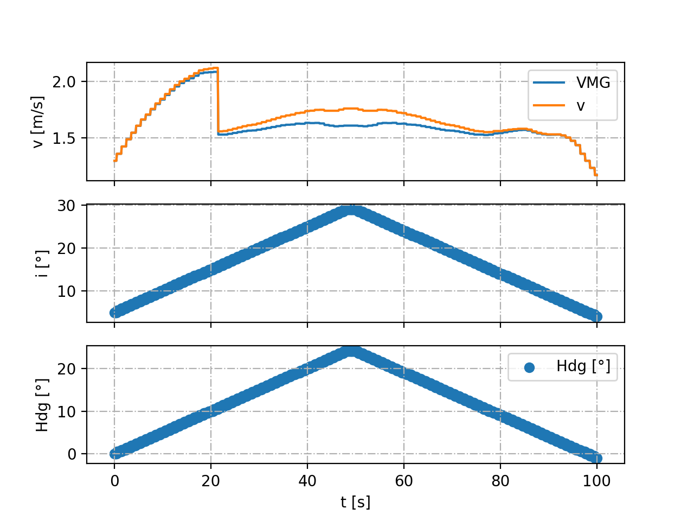

Package Sim¶
This package contains all the classes required to build a simulation for the learning. In this small paragraph, the physic of the simulator is described so that the reader can better understand the implementation.
We need the boat to be in a configuration when it sails upwind so that the flow around the sail is attached and the sail works as a wing. To generate the configuration we first assume that the boat as a target heading hdg_target = 0. The boat as a certain heading hdg with respect to the north and faces an upcoming wind of heading WH. To lower the number of parameters at stake we consider that the wind has a constant speed of 15 knts. The sail is oriented with respect to the boat heading with an angle sail_pos = -40°. The angle of attack of the wind on the sail is therefore equal to i = hdg + WH + sail_pos. This angle equation can be well understood thanks to the following image.

The action taken to change the angle of attack are changes of boat heading delta_hdg. We therefore assume that sail_pos is constant and equal to -40°. The wind heading is fixed to WH = 45°. Finally, there is a delay between the command and the change of heading of τ = 0.5 seconds. The simulator can be represented with the following block diagram. It contains a delay and an hysteresis block that are variables of the simulator class.

Simulator¶
-
class
Simulator.RealistSimulator(duration, time_step)¶ Bases:
objectTODO
-
computeNewValues(delta_hdg, WH)¶
-
getHdg(k)¶
-
getLength()¶
-
getTimeStep()¶
-
incrementDelayHdg(k, delta_hdg)¶
-
incrementHdg(k, delta_hdg)¶
-
plot()¶
-
updateHdg(k, inc)¶
-
updateVMG(k, vmg)¶
-
-
class
Simulator.Simulator(duration, time_step)¶ Bases:
objectSimulator object : It simulates a simplified dynamic of the boat with the config.
Variables: - time_step (float) – time step of the simulator, corresponds to the frequency of data acquisition.
- size (float) – size of the simulation.
- delay (int) – delay between the heading command and its activation.
- sail_pos (float) – position of the windsail [rad].
- hdg_target (float) – target heading towards which we want the boat to sail.
- hdg (np.array()) – array of size size that stores the heading of the boat [rad].
- vmg (np.array()) – array of size size that stores the velocity made good.
- hyst (Hysteresis) – Memory of the flow state during the simulations.
Raises: ValueError – if the size of the simulation is zero or less.
-
computeNewValues(delta_hdg, WH)¶
-
getHdg(k)¶
-
getLength()¶
-
getTimeStep()¶
-
incrementDelayHdg(k, delta_hdg)¶
-
incrementHdg(k, delta_hdg)¶
-
plot()¶
-
updateHdg(k, inc)¶
-
updateVMG(k, vmg)¶
Warning
Be careful, the delay is expressed has an offset of index. the delay in s is equal to delay*time_step
Hysteresis¶
-
class
Hysteresis.Hysteresis¶ Markov Decision process modelization of the transition
Variables: e (float) – state of the flow (0 if attached and 1 if detached) -
calculateSpeed(i)¶ Calculate the velocity from angle of attack.
Parameters: i (float) – angle of attack Returns: v - Boat velocity Return type: float
-
copy()¶ Returns: a deepcopy of the object
-
reset()¶ Reset the memory of the flow.
-
Environment¶
-
class
environment.wind(mean, std, samples)¶ Generetate the wind samples of the environment. The wind intesity is assumed constant and equal to 15 knots
Variables: - mean (float) – mean direction of the wind in [rad]
- std (float) – standard deviation of the wind direction in [rad]
- samples (float) – number of samples to generate
-
generateWind()¶ Generates the wind samples :return: np.array of wind samples
Markov Decision Process (MDP)¶
-
class
mdp.ContinuousMDP(duration_history, duration_simulation, delta_t, LOWER_BOUND, UPPER_BOUND)¶ Markov Decision process modelization of the transition Based on Realistic Simulator of Iboat autonomous sailboat provided by Simulink Compatible with continuous action
Variables: - history_duration (float) – Duration of the memory.
- simulation_duration (float) – Duration of the memory.
- size (int) – size of the first dimension of the state.
- dt (float) – time step between each value of the state.
- s (np.array()) – state containing the history of angles of attacks and velocities.
- idx_memory (range) – indices corresponding to the values shared by two successive states.
- simulator (Simulator) – Simulator used to compute new values after a transition.
- reward (float) – reward associated with a transition.
- discount (float) – discount factor.
- action (float) – action for transition.
-
computeState(action, WH)¶
-
copy()¶
-
extractSimulationData()¶
-
initializeMDP(hdg0, WH)¶
-
initializeState(state)¶
-
transition(action, WH)¶
-
class
mdp.MDP(duration_history, duration_simulation, delta_t)¶ Markov Decision process modelization of the transition
Variables: - history_duration (float) – Duration of the memory.
- simulation_duration (float) – Duration of the memory.
- size (int) – size of the first dimension of the state.
- dt (float) – time step between each value of the state.
- s (np.array()) – state containing the history of angles of attacks and velocities.
- idx_memory (range) – indices corresponding to the values shared by two successive states.
- simulator (Simulator) – Simulator used to compute new values after a transition.
- reward (float) – reward associated with a transition.
- discount (float) – discount factor.
- action (float) – action for transition.
-
computeState(action, WH)¶ Computes the mdp state when an action is applied. :param action: :param WH: :return:
-
extractSimulationData()¶
-
initializeMDP(hdg0, WH)¶ Initialization of the Markov Decicison Process.
Parameters: - hdg0 (float) – initial heading of the boat.
- np.array() (WH) – Vector of wind heading.
Returns: s initialized state
Return type: np.array()
-
policy(i_treshold)¶
-
transition(action, WH)¶
-
class
mdp.RealistMDP(duration_history, duration_simulation, delta_t)¶ Exact same class as the
-
computeState(action, WH)¶
-
copy()¶
-
extractSimulationData()¶
-
initializeMDP(hdg0, WH)¶
-
initializeState(state)¶
-
transition(action, WH)¶
-
Note
The class variable simulation_duration defines the frequency of action taking. The reward is the average of the new velocities computed after each transition.
Tutorial¶
To visualize how a simulation can be generated we provide a file MDPmain.py that creates a simulation where the heading is first increase and then decrease.
TORAD = math.pi / 180
history_duration = 3
mdp_step = 1
time_step = 0.1
SP = -40 * TORAD
mdp = mdp.MDP(history_duration, mdp_step, time_step)
mean = 45 * TORAD
std = 0 * TORAD
wind_samples = 10
WH = np.random.uniform(mean - std, mean + std, size=10)
hdg0 = 0 * TORAD * np.ones(wind_samples)
state = mdp.initializeMDP(hdg0, WH)
SIMULATION_TIME = 100
i = np.ones(0)
vmg = np.ones(0)
wind_heading = np.ones(0)
for time in range(SIMULATION_TIME):
print('t = {0} s'.format(time))
action = 0
WH = np.random.uniform(mean - std, mean + std, size=wind_samples)
if time < SIMULATION_TIME / 4:
action = 0
elif time < SIMULATION_TIME / 2:
action = 1
elif time < 3 * SIMULATION_TIME / 4:
action = 0
else:
action = 1
nex_state, reward = mdp.transition(action, WH)
next_state = state
i = np.concatenate([i, mdp.extractSimulationData()[0, :]])
vmg = np.concatenate([vmg, mdp.extractSimulationData()[1, :]])
wind_heading = np.concatenate([wind_heading, WH])
time_vec = np.linspace(0, SIMULATION_TIME, int((SIMULATION_TIME) / time_step))
hdg = i - wind_heading - SP
This results in the following value for the velocity, angle of attack and heading.
{kind=link}